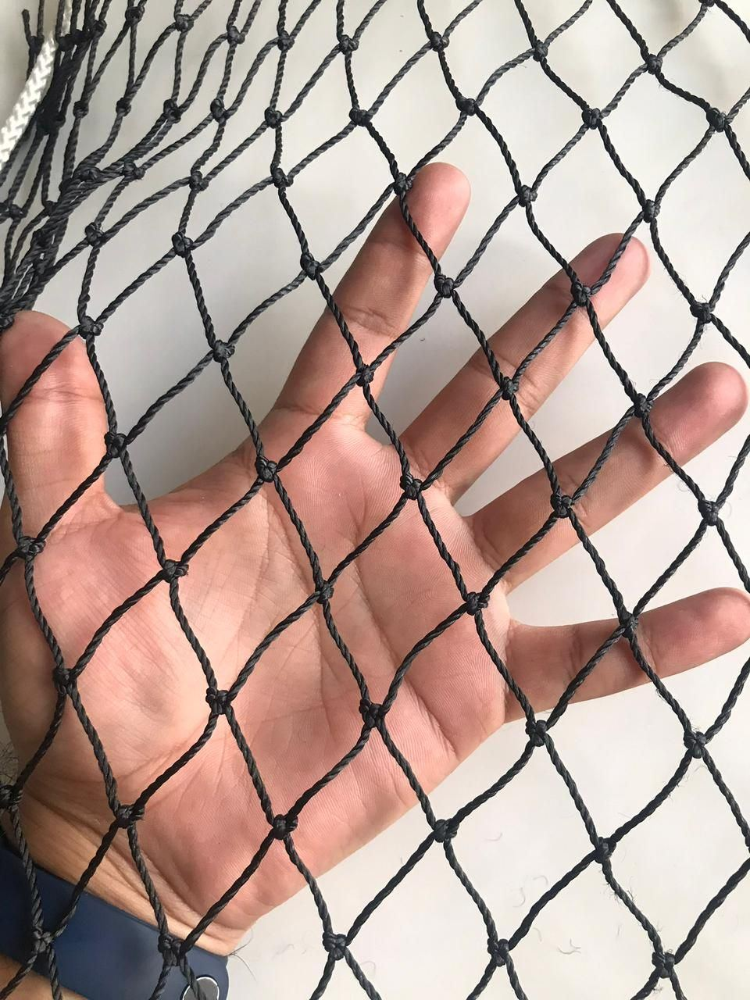

Cuando un cliente me pregunta qué red necesita para su cancha, primero le pregunto qué quiere contener. Después revisamos las medidas, las condiciones del lugar y cómo se instalará. El precio por metro cuadrado es importante, pero solo cuenta una parte de la historia.
Una red perimetral debe responder al uso del espacio. Elegir bien la abertura, el material y la instalación ayuda a aprovechar la inversión y a evitar reemplazos prematuros. En esta guía comparto los criterios que utilizo al asesorar a nuestros clientes.
1. Empieza por el uso de la cancha
Una red para balones de fútbol tiene necesidades distintas a una utilizada para pelotas de golf. También cambia la exigencia entre un perímetro que recibe impactos ocasionales y una zona de entrenamiento donde los golpes se concentran en el mismo punto.

Antes de recomendar una opción, necesito saber:
- Qué deportes se practicarán.
- Cuál es la pelota más pequeña.
- Con qué frecuencia se utilizará el espacio.
- Qué hay alrededor: personas, vehículos o propiedades.
Si la cancha es de usos múltiples, debemos considerar todos los deportes previstos.
2. Elige la abertura según la pelota
Como orientación, una red de una pulgada es una opción para golf y otras pelotas pequeñas, previa revisión de la exigencia de impacto. Las aberturas de cuatro pulgadas son opciones para balones grandes, como fútbol o voleibol. Las de dos y tres pulgadas permiten evaluar soluciones intermedias según el proyecto. Explico estas diferencias con más detalle en redes de 1, 2, 3 y 4 pulgadas.
La abertura no resuelve todo: también debemos revisar el cordón, los nudos y la confección. Para golf, además del tamaño de la pelota, considero la intensidad de los golpes y el espacio disponible detrás de la red.
Pregunta cómo mide el proveedor la abertura: lado del rombo, diagonal o malla estirada. En redes romboidales, la forma del paño cambia al extenderlo; conviene comparar medidas con el mismo criterio y verificar la abertura que tendrá una vez colocado.
3. Revisa el material y su tratamiento
Es común encontrar productos anunciados con una descripción similar a la nuestra: “nylon alquitranado calibre 18”. Esa descripción, por sí sola, no permite saber si dos redes ofrecen el mismo desempeño.

En Redes Deportivas RC utilizamos cordón de nylon alquitranado calibre 18 para nuestras redes perimetrales. Al evaluar un material, reviso la composición de la fibra, la construcción del cordón, la uniformidad de la malla y los nudos, el tratamiento y la confección de los bordes.
Desde mi experiencia, la calidad y uniformidad del tratamiento son aspectos importantes. El acabado puede apreciarse visualmente y al tacto, pero esas observaciones deben acompañarse de información técnica. El color negro o la rigidez no bastan para demostrar resistencia o duración.
4. El clima importa: nuestra experiencia desde Yucatán
“En mi estado hace mucho calor, ¿la red resistirá?” es una pregunta que escucho con frecuencia. Entiendo esa preocupación: trabajamos desde Yucatán, donde nuestra misión es buscar redes resistentes para las condiciones que enfrentan las instalaciones a la intemperie.

Aquí considero mucho más que el calor: la exposición al sol, las lluvias, las ráfagas de viento y, en las zonas cercanas a la costa, el ambiente salino. La ubicación específica importa; una instalación junto al mar no enfrenta necesariamente las mismas condiciones que una en el interior.
Esta experiencia me lleva a revisar el conjunto: red, tratamiento, confección, fijaciones y estructura. En ambientes costeros también hay que prestar atención a los accesorios metálicos y puntos de anclaje, porque su deterioro puede afectar toda la instalación.
Por eso pido la ubicación del proyecto, su cercanía al mar y fotografías del entorno. Conocer el lugar nos ayuda a recomendar una solución mejor adaptada al espacio.
5. Compara el costo de la red instalada
Mi recomendación es comparar la inversión completa: red, colocación, accesorios, equipo para trabajar en altura y preparación de la estructura cuando sea necesaria. Si hay que reemplazar una red antes de lo previsto, varios de estos gastos pueden repetirse.
Imaginemos una superficie de 100 m² y dos precios ilustrativos: $29 y $38 por metro cuadrado. Para mostrar el efecto de la instalación, supongamos que en ambos casos cuesta lo mismo que la red:
| Concepto | Opción de $29/m² | Opción de $38/m² |
|---|---|---|
| Compra de la red | $2,900 | $3,800 |
| Instalación hipotética | $2,900 | $3,800 |
| Inversión inicial | $5,800 | $7,600 |
La diferencia inicial sería de $1,800. Si la primera opción necesitara reemplazarse y se pagaran otra vez la red y una instalación equivalente, el gasto acumulado llegaría a $11,600. Esto no incluye retiro ni accesorios adicionales.
No significa que toda red económica sea de baja calidad. El ejemplo muestra por qué vale la pena comparar precio, desempeño esperado y posibles reemplazos. Hablo de otros casos similares en errores frecuentes al comprar redes deportivas.
6. Considera las condiciones de instalación
He capacitado instaladores en distintas partes de México. Como referencia de esa experiencia, el costo de instalación puede acercarse al 100% del valor de la red. Es una orientación de campo, no una tarifa fija ni una estadística nacional.

La altura, los accesos, el estado de los postes, los traslados y la necesidad de grúas, plataformas o andamios pueden cambiar el presupuesto. Un sitio sin espacio para colocar el equipo requiere una planeación diferente. Compartir medidas y fotografías desde el inicio ayuda a identificar estas condiciones; en qué preparar antes de instalar una red perimetral explico qué revisar.
7. Pregunta por la duración y la garantía
Según mi experiencia, una red de buena calidad puede alcanzar entre ocho y diez años a la intemperie en condiciones favorables. También he observado redes de menor calidad con deterioro importante en periodos tan cortos como seis meses.
Pregunta qué condiciones contempla la estimación y qué cubre la garantía del proveedor.
Recomiendo revisar periódicamente bordes, fijaciones y zonas de mayor impacto. Los cordones dañados y el roce continuo contra superficies ásperas o cortantes requieren atención.
8. Busca respaldo técnico y experiencia comprobable
Pide al proveedor que te diga de qué material es el cordón, qué calibre tiene y si lleva tratamiento contra el sol. Son los datos que más influyen en cuánto aguanta una red perimetral a la intemperie y en cómo resiste los impactos.
También recomiendo revisar proyectos terminados y comentarios de clientes. Las referencias que describen tiempo de uso, comportamiento de la red y atención recibida ayudan a conocer la experiencia con el proveedor y complementan la información técnica.
Antes de cotizar, reúne estos datos
- Deporte y tipo de pelota.
- Largo y altura de cada sección.
- Si necesitas una sección, un perímetro completo o una jaula con techo.
- Fotografías de la estructura y los accesos.
- Ubicación y cercanía al mar.
- Si requieres suministro, instalación o ambos.
En Redes Deportivas RC te ayudamos a elegir una red perimetral según el uso, las medidas y las condiciones de tu espacio. Comparte tu proyecto y recibe asesoría para cotizar la opción adecuada.